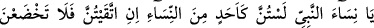
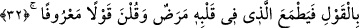

iş iyilik olursa onu katlar, kat kat arttırır kendinden de büyük mükâfat verir.” (en-
Nisâ, 4/40) âyetinin mânâsı budur.
Görmez misin ki Halîl İbrâhim (a.s.) Nemrud’un ateşinde yanmadı. Bilakis “el-
Vedûd” (çok seven ve sevilen) Allah’tan kerîm (bol, güzel) rızık buldu. Çünkü
ehlullâha âid bütün zâhirî nîmetler, onlara mahsus bâtınî nîmetlerden akseder. Gerçek
ecir ancak âhiret hayatında verilecektir. Çünkü bu âlem dar olduğu için onu ihâta
edemez.
Allah Teâlâ’dan kunût (itâat) ve amel niyâz ediyor, gevşeklik ve tembellikten O’na
sığınıyoruz. Çünkü tembellik gafleti ve hicâbı/Hak’tan perdelenmeyi doğurur. Tıpkı
amelin şuhûdu/müşâhedeyi ve perdenin kalkmasını doğurduğu gibi. Çünkü vücûdî
tecellîler, şühûdî tecellîlerin mazharlarıdır.
Bundan Peygamberimiz (a.s.)’ın “Devamlı abdestli ol ki rızkın genişlesin.”[202]
hadîsinin sırrı bilinip anlaşılır. Sûrî temizlik sahib olduğu hususiyetle sûrî/zâhirî rızkı
celb ettiği gibi mânevî temizlik de kendi muktezâsınca mânevî rızkı celb eder. Böylece
cisim ve ruhtan her birinin gıdâsı hâsıl olur ve bâkî hayatın sırrı ortaya çıkar. Çünkü
ruhun zevklerinin ne dünyâda ne de âhirette nihâyeti yoktur.
Mesnevî’de der ki:
Bu toprak ve deri (kösele) perdedir,
Asıl rızkı her an Allah’tan bil,
Rızkı Ondan ara, iste, Zeyd’den, Amr’dan değil.
Sarhoşluğu O’ndan iste, esrardan, şaraptan değil.
Zenginliği hazineden, mal ve mülkten değil, Ondan dile,
Yardımı amcadan haladan değil, Ondan iste!
Allâh’ım, bizi has ve hâlis kullarından kıl, nûn ve sâd hakkı için ayaklarımızı doğru
yolda sâbit kıl.
32. Ey Peygamber hanımları! Siz, kadınlardan herhangi biri gibi değilsiniz. Eğer
(Allah’tan) korkuyorsanız, (yabancı erkeklere karşı) çekici bir eda ile konuşmayın;
sonra kalbinde hastalık bulunan kimse ümide kapılır. Güzel söz söyleyin.
“Ey Peygamber hanımları! Siz, kadınlardan herhangi biri gibi değilsiniz.” Siz Hz.
Peygamber (s.a.) ile sohbet ve beraberlik sebebiyle fazîlet ve şeref bakımından kadınlar
topluluğundan herhangi bir topluluk gibi değilsiniz. Çünkü şerefli olana izâfe edilen de
şereflidir.